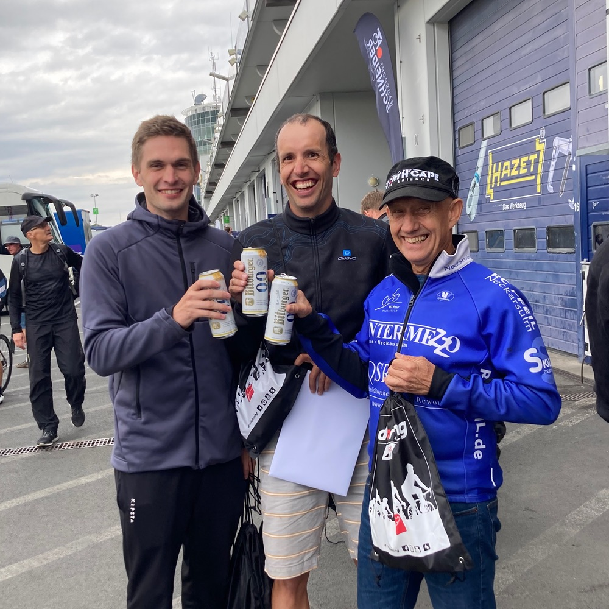 Es muss irgendwann im Januar gewesen sein. Der Rennkalender füllte sich langsam und Rad am Ring geisterte mal wieder durch unsere Köpfe. Unvorsichtigerweise äußerten wir die Idee in unseren Radsportgruppen und gefühlt keine 30 Minuten später hat Erwin uns zwei Parzellen und die Startplätze gebucht. Jetzt gab es kein zurück mehr.
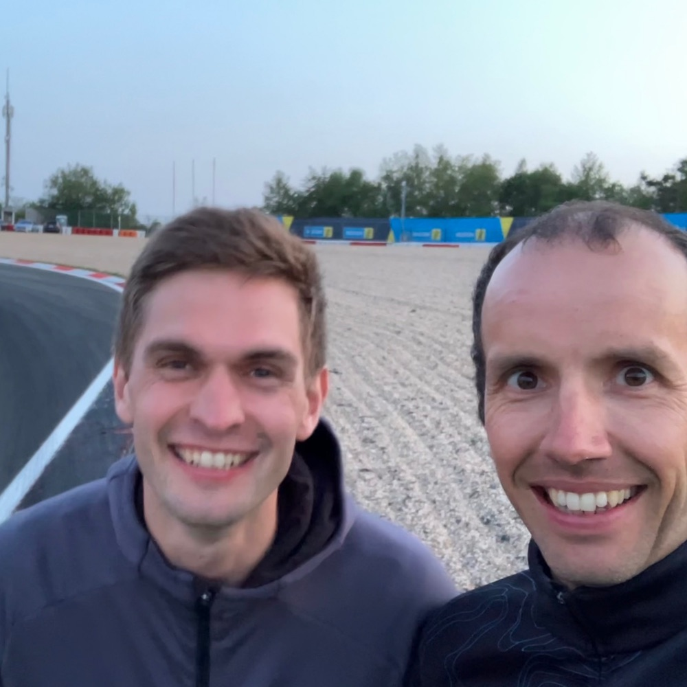 Vor Rad am Ring habe ich fast meinen kompletten Jahresurlaub in den Alpen verbracht. Dort war ich auch das Marmotte gefahren, habe einige Alpenpässe bezwungen und schließlich noch den Glockner von Österreich bezwungen – vielmehr ging es hinauf auf die Edelweißspitze, aber das ist eine andere Geschichte.
Etwas war diesmal aber anders. Erwin hat alles geplant. Gemeinsam werden wir in der Altersklasse Ü50 starten ([63+39] / 2 > 50) und haben, wenn alles gut läuft, Chancen ganz vorne zu landen. Das erste Mal für mich, dass ich mit so etwas wie Ergebnisdruck an den Start gehe. Ich bin aufgeregt…
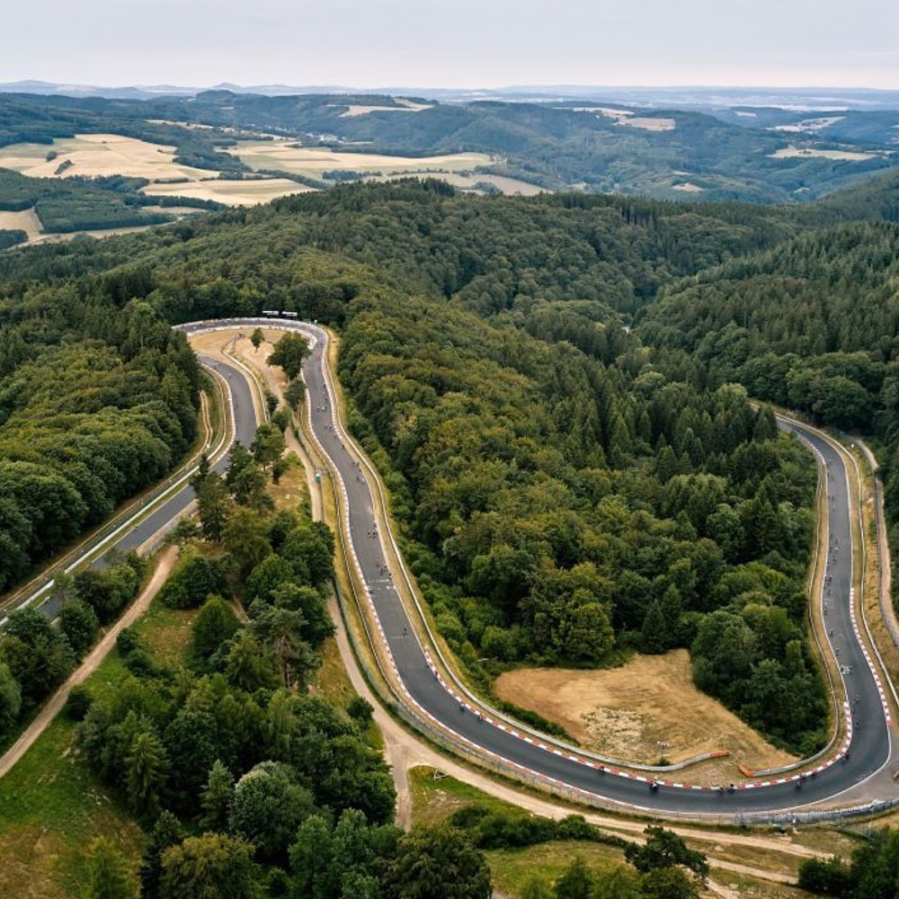 Ich kenne Nürburgring und Nordschleife. Nicht, weil ich so ein Motorsportnarr bin, sondern weil ich gerne Rennspiele auf PC und PlayStation gespielt habe. Was mir nicht ganz klar war ist, wie sehr es auf dieser Strecke auf und ab geht. Einen ersten realen Eindruck davon bekommen wir schon bei der Anreise, als wir uns über alpenähnliche Passstraßen zum Veranstaltungsort hinaufschrauben. Ein reges Treiben entlang der Formel 1 Strecke, wo unsere Mitstreiter schon die Lager aufschlagen. Es ist windig, die Stimmung ist trotzdem gut. Am nächsten Tag erwarten uns heiteres Wetter und 20 °C. Ideale Bedingungen für ein Radrennen.
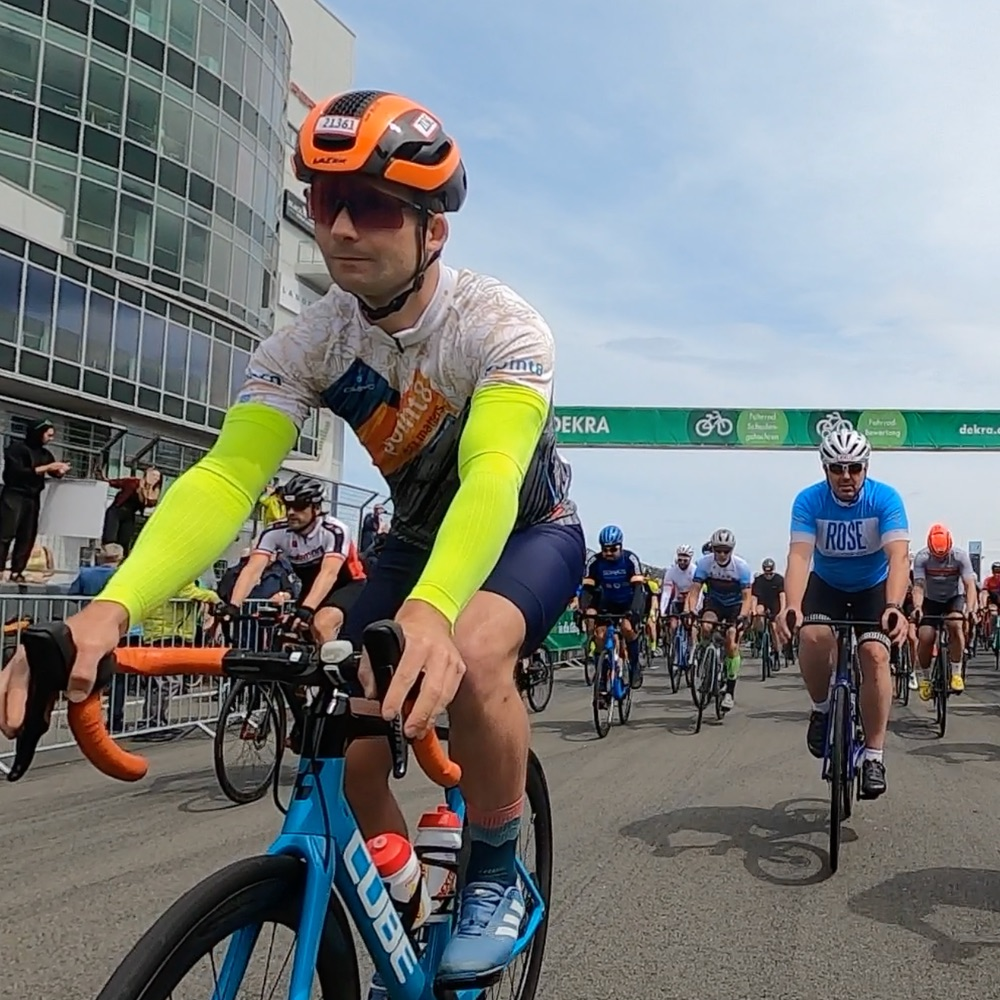 Die Aufregung steigt. Wir frühstücken gemütlich und führen letzte Checks an den Rädern durch. Ein Start um 13:00 Uhr ist Mal etwas Angenehmes. Ich werde zusammen mit Thorben den ersten Stint fahren, bevor wir nach zwei Runden an Erwin und Sascha übergeben.
Wir starten pünktlich bei sonnigem Wetter und machen uns bereit, ganz gemütlich durch die ersten Gefahrenstellen zu Rollen. Das Feld komprimiert an den ersten Gegenwellen stark, einigen Fahrer:innen springt die Kette ab, aber scheinbar kommt es nicht zu Stürzen. An den ersten schnellen Abfahrten es das Feld schon gut in die Länge gezogen. Es gibt viel Platz zur Linienwahl und mit dem ersten Anstieg zur Hohen Acht beginnt für uns das Rennen richtig. Wir fahren viel zu schnell und schließen die erste Runde mit einem Schnitt von über 30 km/h ab und das, obwohl das Starttempo nicht gerade überragend war.
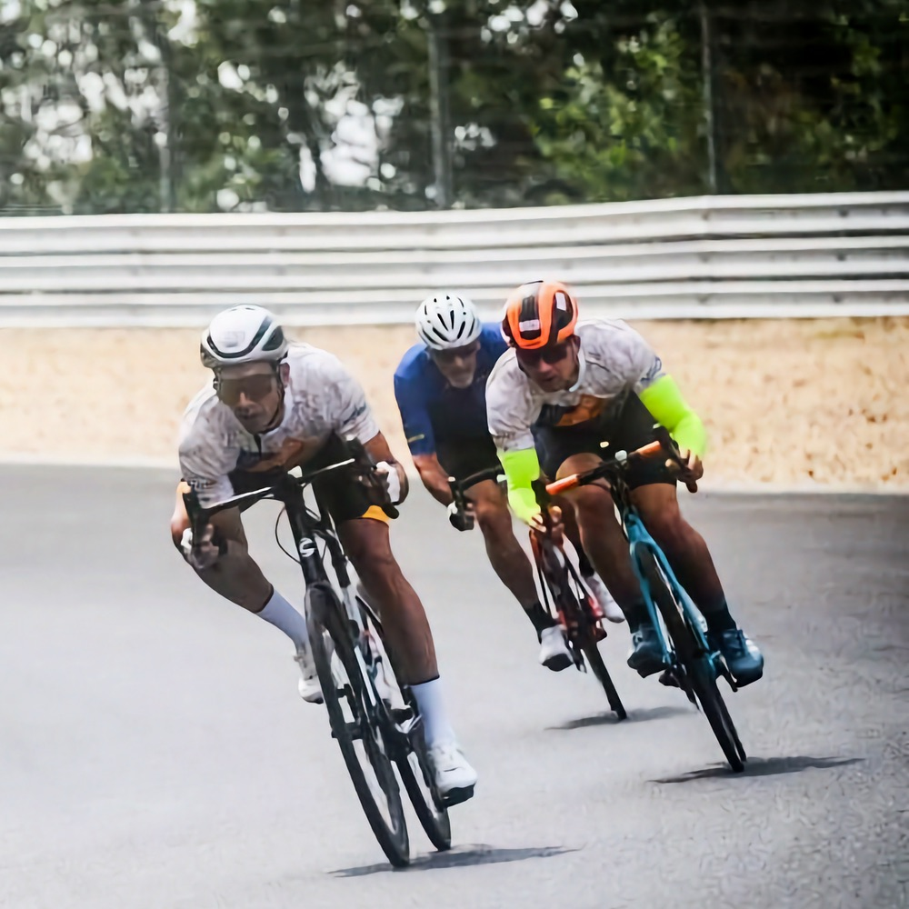 Mit der Streckenkenntnis nimmt auch der Mut etwas zu. Auf der zweiten Runde lassen wir die Räder auf den Abfahrten einfach Mal laufen. Die Höchstgeschwindigkeit in der Fuchsröhre klettert auf fast 100 km/h. Nur fliegen ist schöner. Wir drücken jede Gegenwelle weg und ballern mit über 400 Watt die hohe Acht hinauf. Uns ist klar, dass das nicht schlau ist, immerhin ist der Tag noch lang, aber es macht doch so viel Spaß. Mit einem Stundenmittel von über 31 km/h auf der zweiten Runde übergeben wir den Stab – bzw. in diesem Fall die Flasche – an Erwin und Sascha.
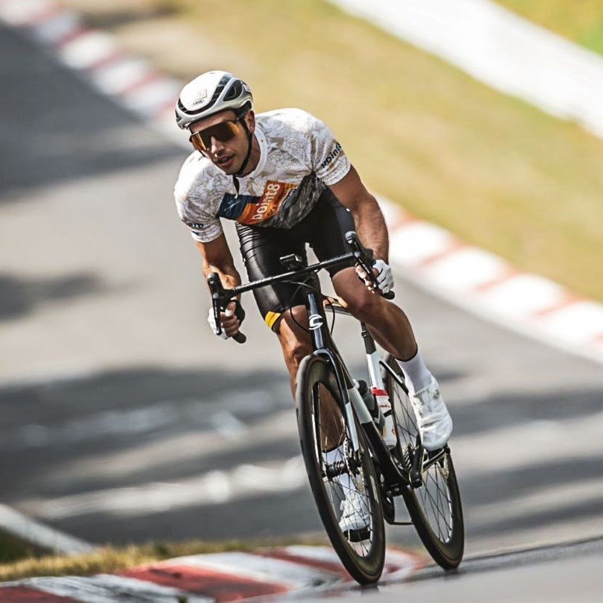 Erwin und Sascha haben sich verloren. Etwas übermütig sage ich: "Fahr schonmal, ich komm dann hinterher". Und so Stand Stint 2 ganz unter dem Motto die Maschine Thorben einzuholen was genauer betrachtet eine dumme und zum Scheitern verurteilte Idee war. Ich bin mir ziemlich sicher, dass ich an der Hohen Acht einen neuen VO2 max Bestwert aufgestellt habe, auch wenn mir das nötige Messequipment gefehlt hat. Unterm Strich half aber alles Ducken, Ballern und Drücken nicht. Einige Minuten hinter Thorben beendete ich meinen zweiten Einsatz, den letzten heute bei Tageslicht. Die nächsten Runden werden in die Dämmerung fallen.
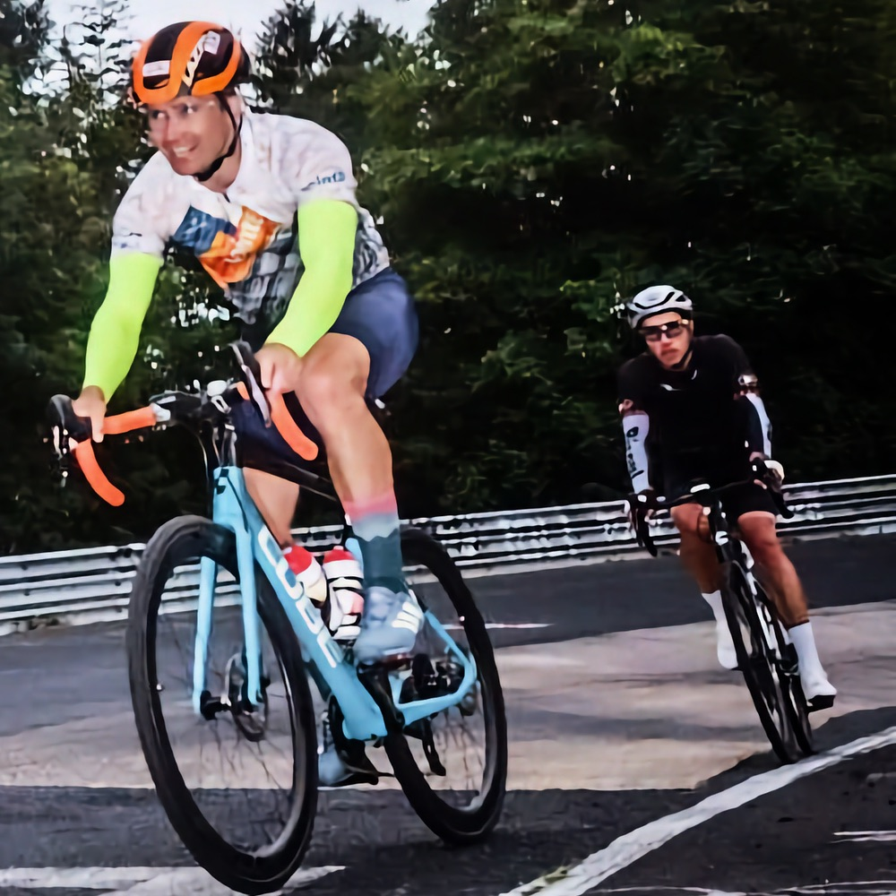 Das angenehme an einem 24h Rennen ist ja, dass man im Grunde Zeit zum Essen hat. der Ablauf ist also: Fahren, Essen, andere Dinge erledigen, Rad vorbereiten, ausruhen. Die Pause vor Stint 3 ist in dieser Hinsicht ereignisreich, denn mir wird klar, dass die aktuell vorgesehene Übersetzung von 34/28 mich in der Nacht nicht glücklich machen wird. Deshalb ist neben Nudelsuppe und Apfelkuchen auch noch der Wechsel der Kasette am Hinterrad notwendig. Das geht glücklicherweise fix und problemlos, so dass ich mich schnell wieder dem zweitwichtigsten Punkt, nach dem Essen, dem Ausruhen widmen kann.
Erwin und Sascha fahren schnelle Runden und schon bald müssen wir wieder ran. Thorben wartet kurz auf mich und wir nehmen Stint 3 gemeinsam in Angriff. Es wird dunkler und wir sehen zig rote Lichter vor uns. Die Streckenverhältnisse sind gut und das Tempo weiter hoch. Aber wir merken langsam, dass wir mit unseren Kräften haushalten müssen. An der Hohen Acht freue ich mich über die zusätzlichen Zähne am Hinterrad. Auf dem Flachstück in Richtung Ziel versuchen wir im Windschatten der schnelleren 4er Teams zu fahren. Es wird deutlich zäher. Fühlbar erschöpft übergeben wir kurz vor Mitternacht an unsere Teamkollegen. Erwin und ich liegen zu diesem Zeitpunkt auf Platz 3 der Altersklasse und auch für Sascha und Thorben ist die Top 10 erreichbar.
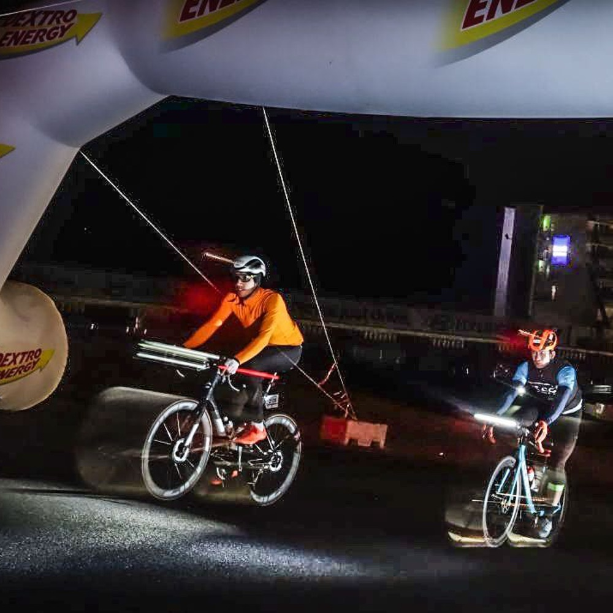 Mit dem Essen ist das so eine Sache. Der Radcomputer berechnet einen Energieverbrauch von knapp unter 1500 kcal pro Stint. Gehen wir mal davon aus, dass in den ersten drei Einsätzen der größte Teil davon auf Kohlenhydrate geht, entspräche das dem Konsum von fast 300 g Zucker. Das ist zwar möglich aber auch eine ganz schöne Quälerei. Und schlussendlich bemerken wir, dass die Pausen vielleicht doch zu kurz sind um den Ofen bei dem bisher hohen Tempo heiß zu halten.
So geschiet es dann, dass wir dem hohen Tempo des Nachmittags unseren Tribut zollen. Durch fröhliches abrackern mit 60er Kadenz und kaum noch messbarem Puls an der Hohen Acht. Immerhin steht dort nun ein DJ und der Höhepunkt der Strecke (und des Leidens) ist mit einer netten Lichtshow begleitet. Wir machen aus der Not eine Tugend, fahren sicher durch die Nacht und lassen dem Körper etwas Zeit und Luft zur Erholung. Eine gute Entscheidung, denn mittlerweile sind wir alle angeschlagen. Zwei von uns so sehr, dass sie das Rennen in der Nacht beenden. Sascha und ich entscheiden uns um halb zwei zu einer kurzen Nachtruhe. Bei Einbruch der Morgendämmerung geht es weiter.
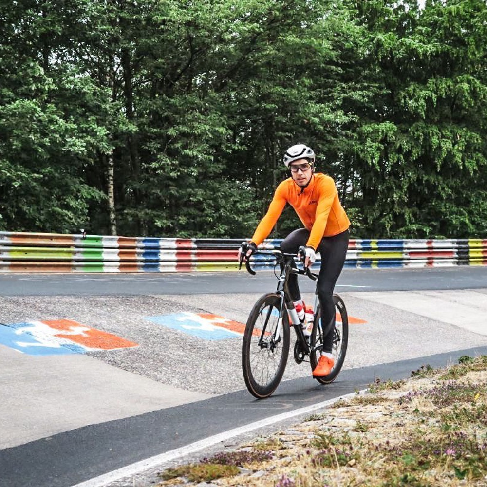 Die Sonne ist wieder aufgegangen als wir uns um 5:39 Uhr auf den Sattel setzen. So richtig viel gegessen hatten wir vor der Pause nicht und so hält sich zwar die Müdigkeit in Grenzen, die Beine fühlen sich aber noch immer etwas leer an. Wir fahren zwei ruhige Runden. Zum ersten Mal fahre ich auf der Suche nach einer Trinkflasche durch die Verpflegungsstation an der Hohen Acht. Leicht verschlafen teile ich Sascha mit, dass ich meinen Augen nicht traue aber glaube dort Mettwürtchen entdeckt zu haben. Eine Beobachtung die sich nach weiteren 26 km und 550 Höhenmetern bestätigen lässt. Mit wohligem Rauchgeschmack im Mund und gefühlt als die zur Zeit Langsamsten auf der Strecke kommen wir um 8 Uhr am Basislager an, wo wir fröhlich empfangen werden. Erwins Frau Manuela, die uns schon die ganze Zeit über betüddelt, hat schon den Frühstückstisch gedeckt. Wir machen es uns gemütlich und planen um 10:30 Uhr zwei weitere Runden zu fahren, um dann ganz in Ruhe durchs Ziel zu rollen.
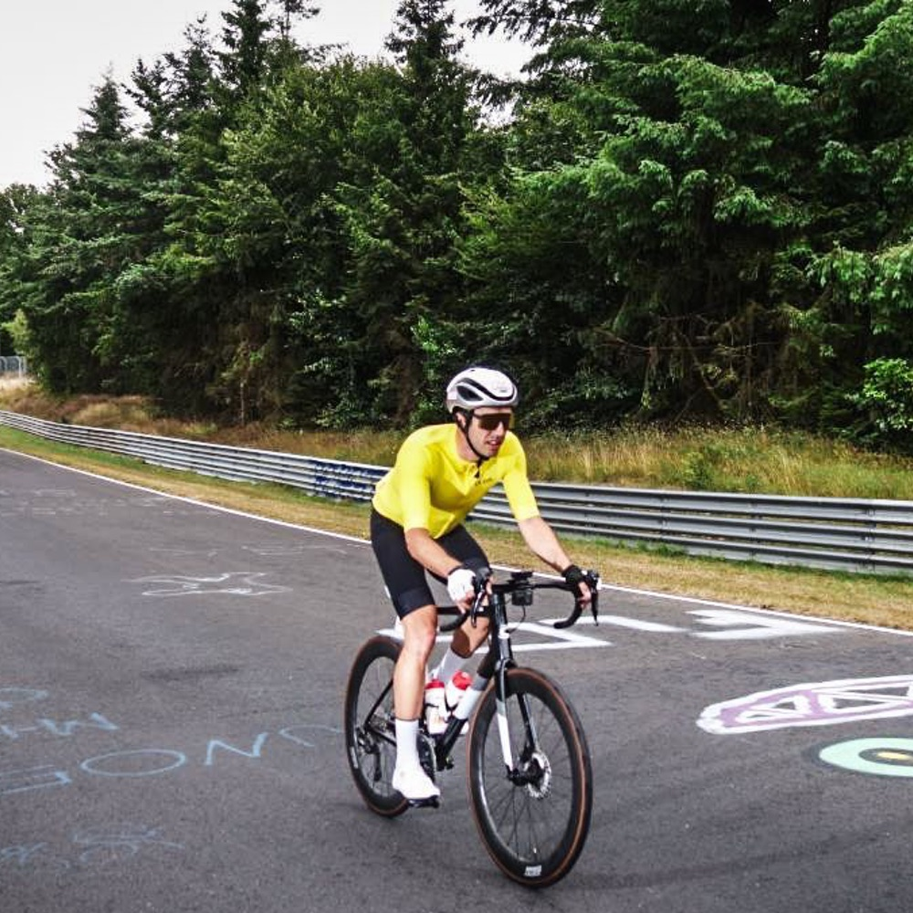 Und dann kommt es doch wieder ganz anders. Wir starten pünktlich um halb elf, aber hören schon früh auf der Nordschleife ein Martinshorn. Mit einem flauen Gefühl im Magen machen wir Platz für den Rettungsdienst der uns kurz darauf überholt. Am tiefsten Punkt der Strecke sehen wir ihn wieder, bewacht von Streckenposten die an einer der steilsten Abfahrten auf der Strecke die Unfallstelle absichern an der ein Teilnehmer kurz zuvor gestürzt ist. Die Beine fühlen sich eigentlich gut an, doch spätestens als wir das knattern des Rettungshubschraubers über uns hören wird das alles zur Nebensache. Das Rennen wurde mittlerweile abgebrochen. Nach einer letzten Überfahrt an der Hohen Acht bekommen wir das erst auf der Zielgeraden mit. Aufgrund des Sturzes und des mittlerweile sehr böhigen Windes eine gute Entscheidung. Kurze Zeit später gibt es zumindest eine leichte Entwarnung, der Gestürzte sei zwar verletzt aber nicht in Lebensgefahr.
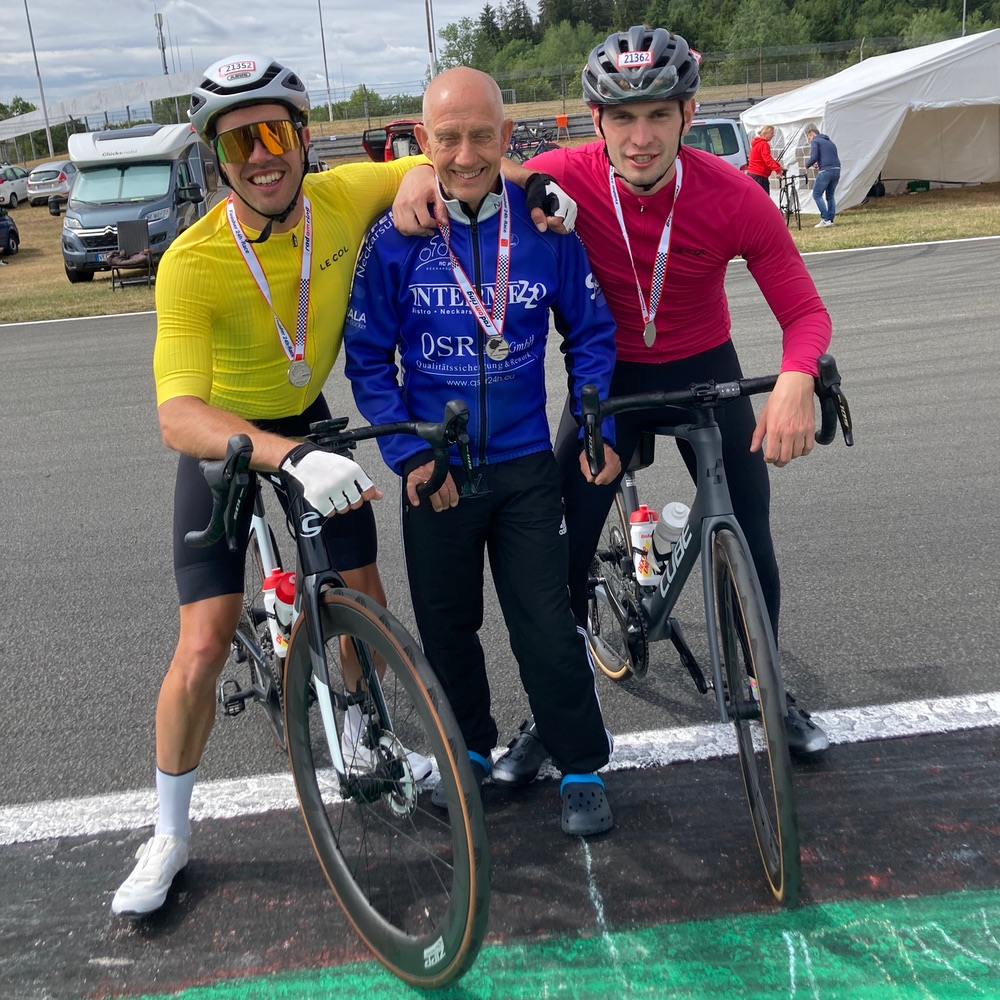 Zu den erstaunlichen Eigenschaften des Bewusstseins gehört es, dass unliebsame Bilder und Eindrücke leicht verdrängt werden. Ich muss gestehen, dass ich bei der Zieldurchfahrt nicht mehr an den Unfall gedacht habe, sondern glücklich über ein großartiges Erlebnis meinen Frieden mit dem vorzeitigen Rennende fand und gemeinsam mit Sascha über die Linie rollte.
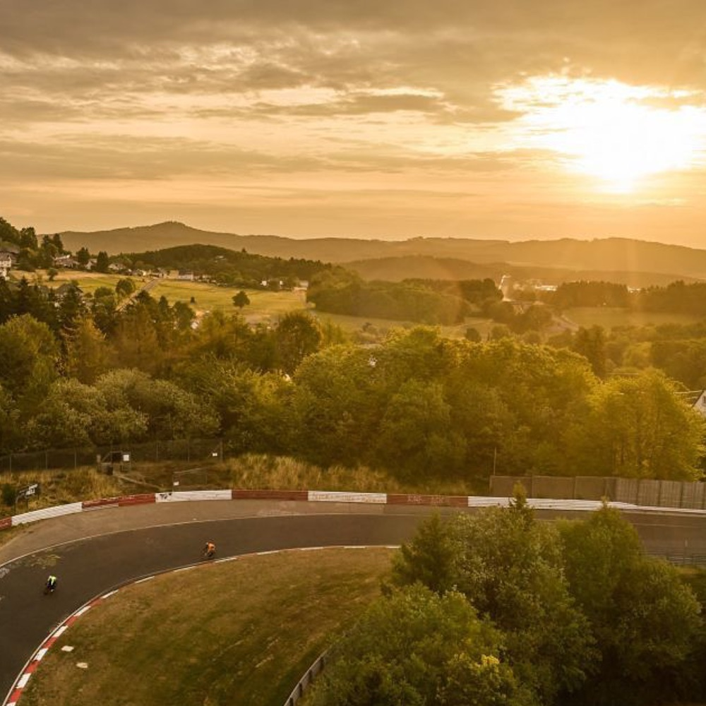 Meistens haben wir die Wahl: Ein flaches Rennen mit großen Gruppen und Sturzgefahr durch das enge Feld oder ein bergiges mit verstreuten Fahren aber Gefahren in der Abfahrt. Es ist uns selbst überlassen, mit Abstand zur Gruppe oder langsamer bergab zu fahren. Meist machen wir es trotzdem nicht. Wir fahren Rennrad aus Spaß am Leiden und mit einem Hang zur Geschwindigkeit. Vielleicht auch mit einer gewissen Überheblichkeit, dass uns das nicht passieren wird.
Rad am Ring ist eine vorbildlich organisierte Veranstaltung. Die Strecke ist – bis auf wenige Meter im Fahrerlager – perfekt und alle Teilnehmer:innen nehmen Rücksicht aufeinander. Und obwohl ich bei eigentlich jedem Rennen teils schlimme Stürze gesehen habe und Rad am Ring das Rennen war bei dem ich mich selbst am sichersten gefühlt habe geschieht doch immer wieder etwas.
Am Ende überwiegt die Euphorie über ein tolles Wochenende mit einem tollen Team und großartiger Unterstützung. Immer wieder denke ich aber an den Gestürzten und hoffe, dass es ihm schnell wieder gut geht.
Nachtrag (2023-07-26): Laut Pressemitteilung von Rad am Ring geht es dem Gestürzten mittlerweile deutlich besser. Es sind keine langfristigen Schäden zu erwarten. Rad am Ring und der Gestürzte suchen nach den Ersthelfern um sich persönlich zu bedanken.